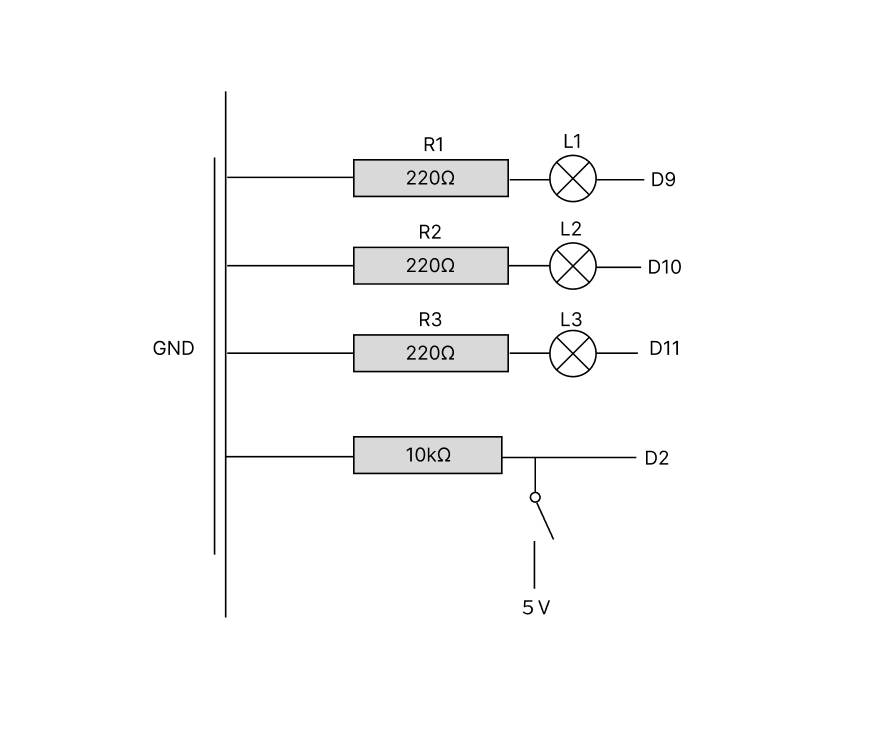
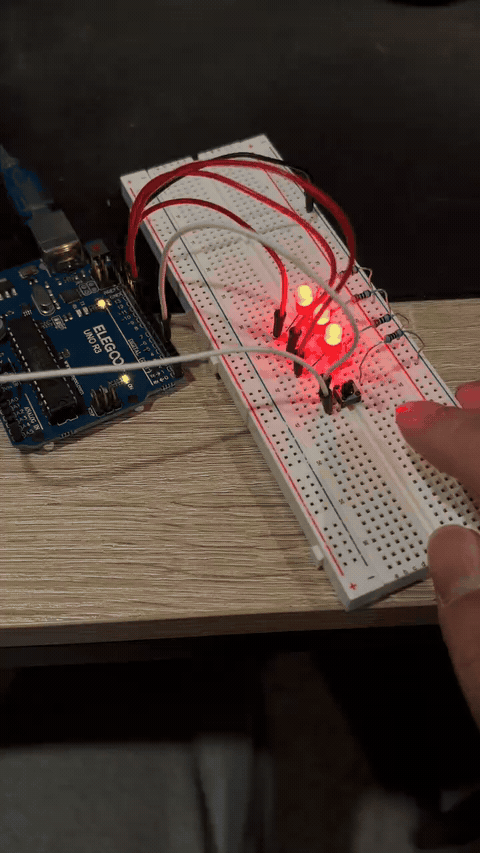
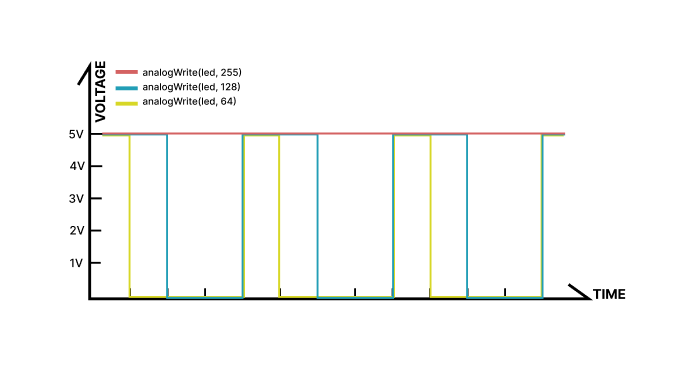

The toy has three LEDs. All three are fully lit when powered on. While the button is held, LED 1 gradually fades out; the other two remain on. Releasing the button returns LED 1 to full brightness.

// Start with LED 1 at full brightness.
int brightness = 255;
void setup() {
// Configure the three LED pins as outputs using a for-loop.
for (int pin = 9; pin <= 11; pin++) {
// Enable output mode on each LED pin.
pinMode(pin, OUTPUT);
}
// Use ordinary INPUT because D2 has an external 10 kOhm pull-down resistor.
pinMode(2, INPUT);
}
void loop() {
// Keep LED 2 fully on.
digitalWrite(10, HIGH);
// Keep LED 3 fully on.
digitalWrite(11, HIGH);
// Check if the button connects D2 to 5 V.
if (digitalRead(2) == HIGH) {
// Continue fading only while brightness is above zero.
if (brightness > 0) {
// Reduce LED 1 brightness by five PWM steps.
brightness = brightness - 5;
}
// Make the fading visible to the eye.
delay(20);
} else {
// Immediately restore full brightness when the button is released.
brightness = 255;
}
// Output the brightness level to PWM pin D9.
analogWrite(9, brightness);
}
DC forward current (design): 20 mA = 0.02 A
Typical red LED forward voltage (design assumption): 1.85 V
Required R at 5 V: R = (5 − 1.85) / 0.02 = 157.5 Ω
Chosen value: 220 Ω for each LED (safer, approximately 14.3 mA per LED). Resistor power ≈ 0.045 W, so a 1/8 W or 1/4 W resistor is adequate.
Button current limiting: I = 5 V / 10,000 Ω = 0.0005 A = 0.5 mA when pressed. I used a 10 kΩ pull-down resistor to hold D2 at LOW when the button is released and to avoid a direct short between 5 V and GND when pressed.
The PWM duty cycle increases as the analogWrite value increases.

Using the same design assumptions as A1, each red LED draws approximately (5 − 1.85) / 220 = 0.0143 A = 14.3 mA. Three LEDs at full brightness draw approximately 3 × 14.3 = 43.0 mA in total. Because each LED is connected to a separate output pin, each pin supplies about 14.3 mA, below the commonly recommended 20 mA operating current per UNO R3 I/O pin. The LED total is also within typical board-level limits, although other board loads must be considered.
Ignoring the Arduino board and conversion losses, the ideal LED-only battery life is 1200 mAh / 43.0 mA ≈ 27.9 hours. A more realistic illustration includes an assumed 50 mA for the UNO board: total current ≈ 43.0 + 50 = 93.0 mA, giving 1200 / 93.0 ≈ 12.9 hours under idealized conditions. Actual runtime depends on battery voltage, regulator losses, the UNO's true consumption, and how long LED 1 is dimmed. A 1200 mAh battery cannot necessarily power the UNO directly without an appropriate voltage supply.
I measured 2.02 V across one red LED when it was on. The theoretical value used in my resistor calculation was 1.85 V. The measured voltage is 0.17 V higher, or about 9.2% higher, but still within the typical range for a red LED. This difference is expected because the actual forward voltage varies with LED model, current, and temperature. With a 220 Ω resistor, the estimated current based on my measured value is (5 − 2.02) / 220 ≈ 13.5 mA.
ChatGPT helped me organize the HTML page in a format, and draft the written responses. I reviewed the content and will insert my own circuit images, graph, and demonstration.